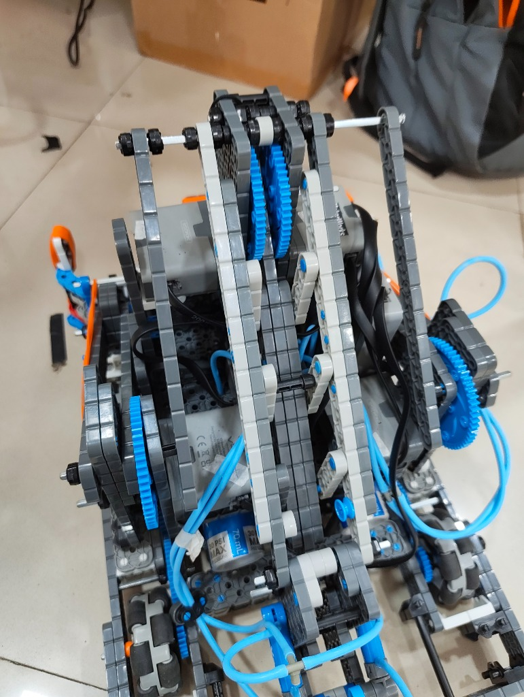
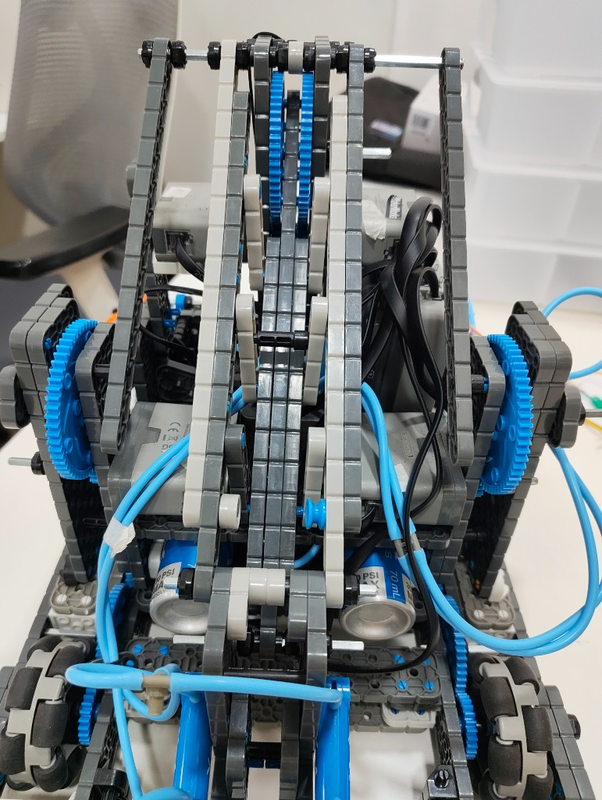
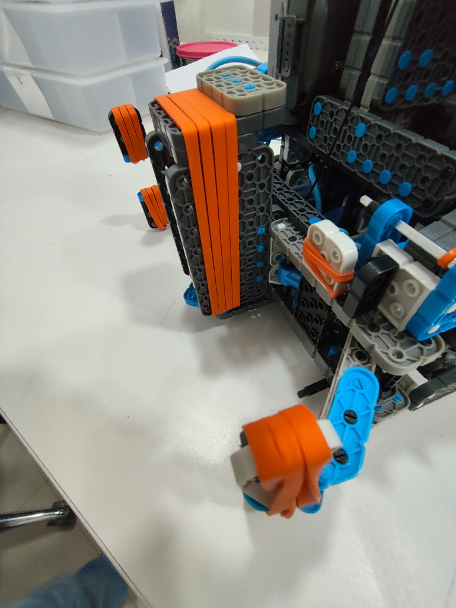

Robotics, coding, debate, and swimming
Robotics & Hardware Engineering
I enjoy making things that move. Robotics lets me work with both the hardware and the code, and gives me plenty of chances to test an idea and improve it.
VEX Robotics Journey
For eight months, I worked with three teammates at MakerWorks Lab in Malad East to build and improve our VEX robot. At the regional competition, our team placed 12th and received the Judges Award. We then went on to compete at the national level.



Open-Source Hardware Projects
I'm working on the Open Duck Mini V2, an open-source walking robot inspired by Disney's BDX droid. So far, I've been learning how to set it up over SSH, calibrate its parts, and connect its software to the hardware. It uses Feetech servos, an IMU, and a Raspberry Pi Zero 2 W.
Custom Builds
I also built and programmed a four-wheel-drive car that uses an Arduino Uno to scan for obstacles and steer around them.
Software and coding
My Coding Journey
I started coding in third grade because I wanted to make websites and apps. I began with Scratch, then tried JavaScript in fifth grade. Now I'm learning Python through CS50P and building up my skills by working through the course.
Application Design & 3D Modeling
I'm planning an app called SpendWise to help kids learn the basics of budgeting and spending. I also use Bambu Studio to design parts and enclosures for my robotics projects.
Model United Nations & Academic Debate
I take part in Model United Nations and academic debate. I enjoy researching an issue, hearing how other people see it, and putting together a clear argument. I haven't won a debate yet, so I'm working on getting better at research and speaking.
Competitive Swimming
I compete in swimming, mainly in freestyle and backstroke. Training helps me stay focused and gives me goals to work towards.
- Events: I swim the 50m and 100m freestyle and the 50m backstroke.
- Training: I work on my starts, turns, stroke technique, and pacing.
- Relays: I practise clean take-offs and smooth handovers with my team.